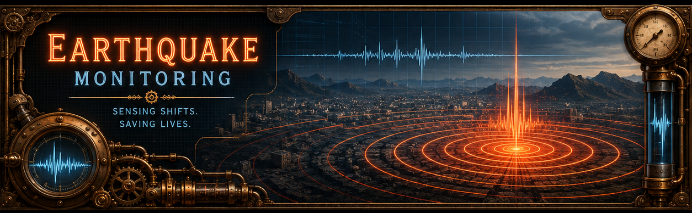

Earthquake Monitoring
Quake Tracker + Volcano Display + Measurement Tools
Red: reported eruption, eruption warning, or unrest. Orange: earthquake within 50 miles (80.5 km), without an activity flag. Gray: neither condition identified; not proof of inactivity. Red takes priority when both apply. Proximity follows the feed and magnitude/age/depth filters, even when earthquake markers are hidden; it does not indicate volcanic activity. Report dates may be old. These map colors are not official aviation alert codes.
Loading volcano activity status...
Combined feeds display the USGS solution when available. Otherwise, human-processed reports take priority, followed by EMSC then GEOFON. Other agency estimates are available in the earthquake popup.
Loading earthquake feed...
Legend/Key
| Symbol | Meaning |
|---|---|
| Earthquake (M2.5 or less) | |
| Earthquake (M2.6–3.4) | |
| Earthquake (M3.5–4.4) | |
| Earthquake (M4.5–5.6) | |
| Earthquake (M5.7–6.9) | |
| Earthquake (M7.0 or greater). Cluster color follows its largest earthquake. | |
| ▲ | Volcano: neither activity nor proximity identified in available data. Activity may be unknown; gray does not mean inactive. |
| ▲ | Volcano within 50 miles of a matching earthquake, without an activity flag. Proximity only, not volcanic activity. |
| ▲ | Reported eruption, eruption warning, or unrest. Volcano clusters prioritize red, then orange, then gray. |
Live earthquake data can be loaded from USGS, EMSC, GFZ/GEOFON, or a combined deduplicated multi-agency option. ISC is not listed because its event service does not allow browser-side CORS fetches.
VolcanoDiscovery supplies reported volcano activity flags. Red volcano markers indicate reported eruption, eruption warning, or unrest; check the report date and source. Orange markers show earthquake proximity only and do not predict an eruption. Gray markers do not establish inactivity. Static volcano locations are supplemented by source coordinates where matched. See the Volcano Monitoring page for detailed reports. Wildfires, floods, droughts, tropical systems, and Schumann resonance have moved to the Live Earth Monitor.